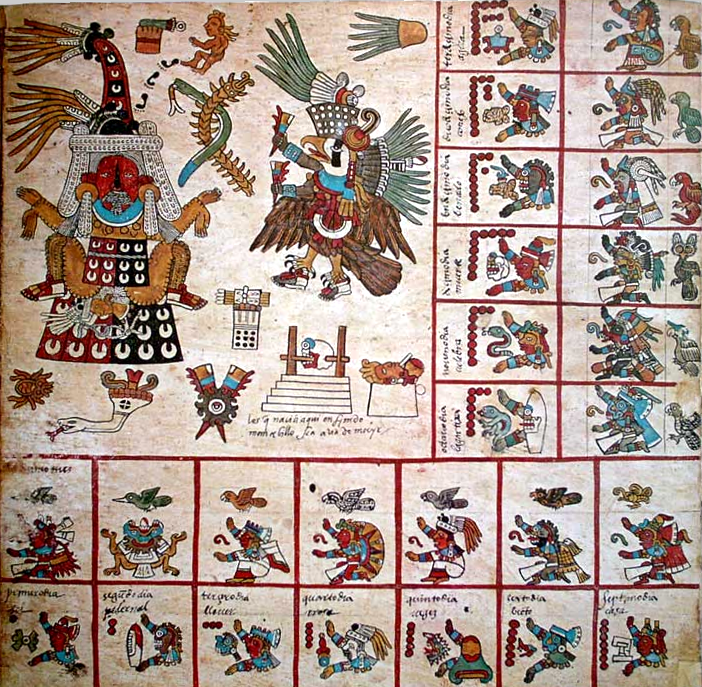
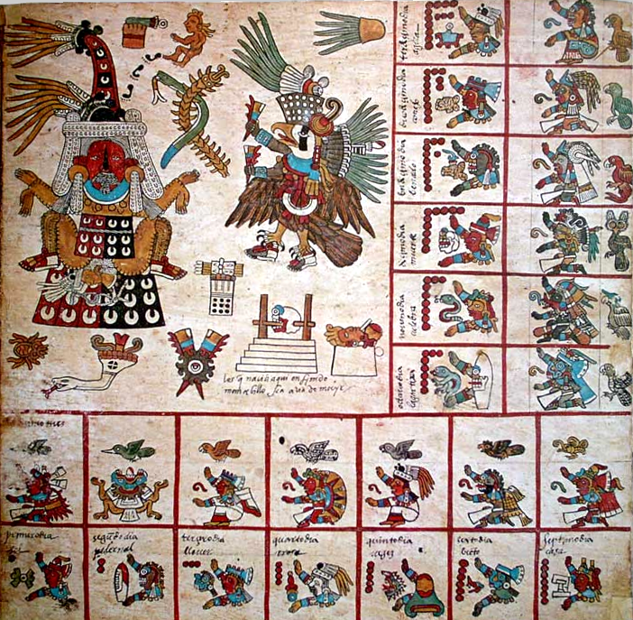

| Penacho de Moctezuma |
| Se trata de uno de los regalos que el emperador Moctezuma dio a Hernán Cortés antes de la conquista. De todas las piezas de arqueología prehispánica fuera de México, esta es, sin duda, la más conocida y la que menos probabilidades tiene de regresar a tierras nacionales; aunque Austria acordó que el objeto sí pertenece al país latinoamericano, el trasladarlo podía destruirlo. |
Códice Borbonicus |
| La cantidad de códices prehispánicos fuera del país es numerosa y la mayoría se encuentran en Inglaterra y Francia. Este ejemplar azteca de 14,2 metros de largo es uno de los más importantes, dado que tiene información relevante acerca de la cosmogonía de dicha cultura. |
Serpiente de Dos Cabezas |
| El British Museum cuenta con una de las colecciones históricas más vastas del mundo, en él se encuentran importantes piezas de todas las antiguas civilizaciones y la mesoamericana no es la excepción. Uno de los objetos más valiosos es una peculiar representación de una serpiente de dos cabezas decorada con pequeñas láminas de jade. Este animal era uno de los símbolos más importantes de la cultura azteca, por lo que aparece constantemente en leyendas, mitos y expresiones artísticas.
|
 

El Cristo Redentor |
| La estatua del Cristo Redentor es una de las primeras cosas que nos viene a la cabeza cuando el tópico es Río de Janeiro. Encima del cerro del Corcovado, 710 metros sobre el nivel do mar, es una de las Siete Maravillas del Mundo Moderno. Además de admirar la propia estatua, con 38 metros de altura y construida en piedra de jabón, también es posible disfrutar de la bellísima vista panorámica de toda la ciudad |
Pan de Azúcar |
| Esta es otra vista de Río que no puedes perder. El Pan de Azúcar es una de las atracciones más importantes de la ciudad. Más de 100 años atrás, recibió el primer teleférico de Brasil, en el que se puede ver el increíble paisaje que Río tiene a ofrecer: su selva, las playas y el horizonte majestuoso. El paseo en el teleférico es de 396 metros y termina en la cumbre del Pan de Azúcar. Cuando Río de Janeiro fue sede de los Juegos Olímpicos de 2016, el icónico Pan de Azúcar –que se puede ver de prácticamente cualquier lugar en la ciudad– sirvió de inspiración para el logotipo de la competición, tal es su importancia para Río.
|
Monte Roraima |
| El Monte Roraima es un bellísimo monumento brasileño muy lejano de las carreteras comúnmente recorridas. El Parque Nacional del Monte Roraima se ubica al norte del estado de Roraima, cerca de la frontera de Brasil con Venezuela y Guayana. En esa bella reserva natural, encontrarás una de las montañas más antiguas de la tierra. El Monte Roraima cuenta con casi tres kilómetros de altura y más de dos mil millones de años. Además de la montaña, también hay bellas formaciones rocosas, ríos y cascadas, y muchos guías para llevarte por este lugar magnifico. |